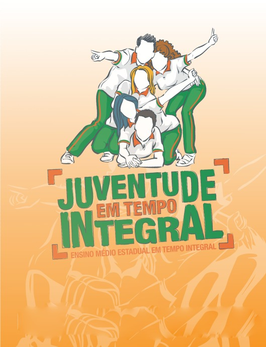

SOBRE
Governo do Ceará, por meio da Secretaria da Educação (Seduc), iniciou, em 2016, a implantação do Ensino Médio em tempo integral nas escolas estaduais. Atualmente, a rede pública conta com 261 Escolas de Ensino Médio em Tempo Integral (EEMTIs) distribuídas em 130 municípios cearenses.
TEMPO INTEGRAL
Cada escola de tempo integral oferta uma jornada de nove horas, garantindo três refeições diárias. O currículo é composto por 30 horas semanais de disciplinas da base comum a todos estudantes e 15 horas na parte flexível, sendo que 10 são escolhidas pelos alunos.
MODO DE APRENDIZAGEM
Este modelo de ensino aumenta o tempo escolar e amplia as oportunidades de aprendizagem que favorecem o desenvolvimento de competências cognitivas e socioemocionais, além do protagonismo estudantil por meio de escolhas de componentes curriculares eletivos.